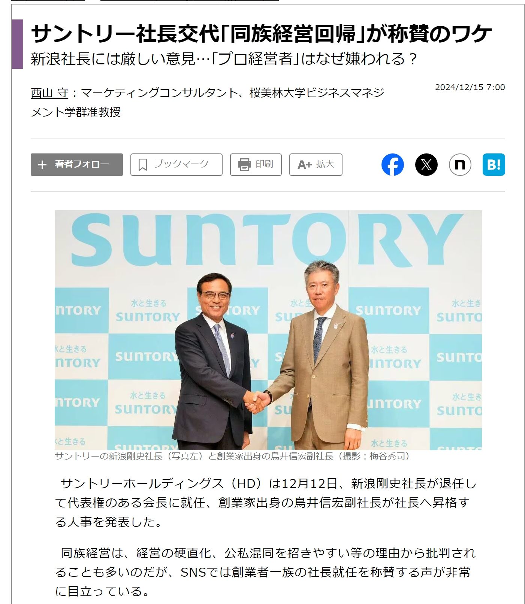
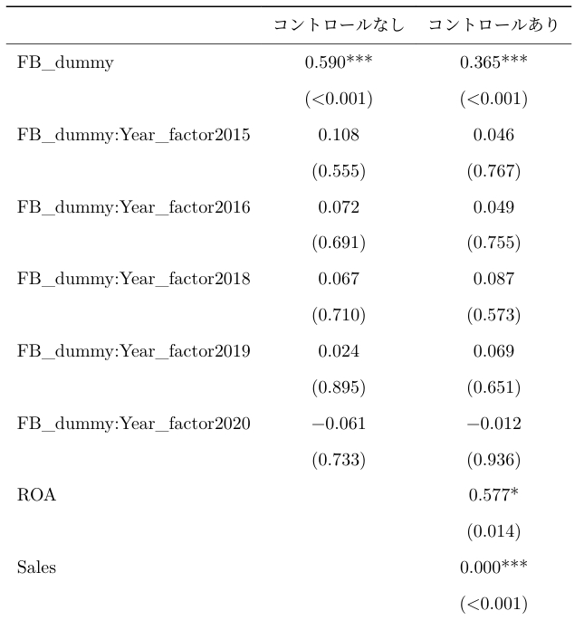
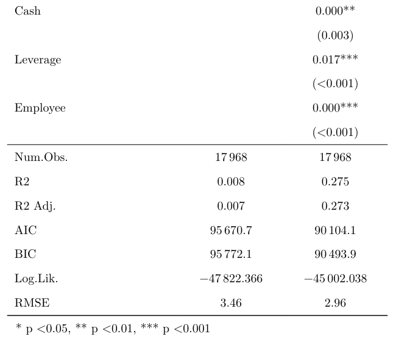

# A tibble: 2 × 3
分類 企業数 比率
<chr> <int> <dbl>
1 非ファミリー企業 1672 0.518
2 ファミリー企業 1555 0.4822025-01-22
要約（一部）：
本研究は日本の上場ファミリー/非ファミリー企業を対象に、課税優遇制度の賃上げへの影響を比較分析した。特に、2018年度施行の「賃上げ・生産性向上のための税制」に焦点を当て、ファミリー企業が非ファミリー企業に比べて賃上げを行ったかを検証した。
本研究のテーマのひとつは「ファミリービジネス」（≒同族経営、家族経営）ですが、どんなイメージを持っていますか？
親族ばかりが優遇される？
ブラック企業？
規模は小さい？
時代遅れの経営形態？
短命？
自社利益しか考えていない？（社会的責任を果たしていない？）
反社会的？（不祥事の温床？）
など… 確かに、ファミリー企業に特有の不祥事（家族の内紛など）が発生した例もある。（次ページ）
Figure 1: ファミリー企業の内紛例
| No. | 企業名 | ファミリー名 | 業種 |
|---|---|---|---|
| 1 | トヨタ | 豊田 | 輸送用機器 |
| 2 | キーエンス | 滝崎 | 電気機器 |
| 3 | F.R.（ユニクロ） | 柳井 | 小売 |
| 4 | ソフトバンク | 孫 | 情報・通信 |
| 5 | セブン&アイHD | 伊藤 | 小売 |
よく知られている大きな会社も、意外とファミリー企業が多い。実は、上場企業の約半分はファミリー企業。
# A tibble: 2 × 3
分類 企業数 比率
<chr> <int> <dbl>
1 非ファミリー企業 1672 0.518
2 ファミリー企業 1555 0.482ちなみに最近もサントリーHDの社長に創業家出身者が就いたことがニュースになっていた。
Figure 2: 東洋経済より引用
ファミリー企業は一概に「時代遅れ」「反社会的」などと言えるのだろうか…？
Figure 4: 実質賃金
所得拡大促進税制（2013年～）
賃上げ・生産性向上のための税制（2018年～）
人材確保等促進税制（2021年～）
（ 安間 (2024) から一部抜粋）
ここで、「賃上げ・生産性向上のための税制」とは「賃上げ等を行った企業に対して、給与等支給額の増加額の一部を法人税から税額控除」するものである。そして「給与等」とは、「俸給・給料・賃金・歳費及び賞与並びに、これらの性質を有する給与(給与所得となる給与)」である。
本研究の目的：
「本研究では賃上げに関する課税優遇がファミリー企業および非ファミリー企業の人件費に与えた影響を分析し、賃上げの傾向にどのような差異があるかを明らかにする。それにより、非ファミリー企業と比較した際のファミリー企業の社会的な存在意義の一端を示すことを目指す。」
Note
平たく言えば、「もしファミリー企業がそうでない企業（非ファミリー企業と呼んでいます）よりも社会的ならば、（例えば国や地域社会の）給与水準を上げる挙げることに、より協力的なんじゃないか？」ということ。「より社会的」とかは直接調べられないことなので、その「より社会的」からのインプリケーションである「人件費の増大」に着目します。
| Saito (2008) | 創業者の子孫が所有・経営するファミリー企業は、非ファミリー企業に比してパフォーマンスが低いことを示した。これは、ファミリー企業はファミリーメンバーを優先的に経営に抜擢するので、結果として能力の伴わない事業承継が行われているためである。 一方で、所有・経営のどちらか一方のみを創業家が担うファミリー企業は、非ファミリー企業よりもパフォーマンスが高いことも示した。 |
| 久保田 et al. (2012) | 非ファミリー企業に比べファミリー企業は損失をより迅速に開示する（会計保守主義の傾向がより強い）ことを示した。 |
| Asaba (2013) | ファミリー企業は需要変動の大きい状況下でも設備投資を減らさない特徴がある（我慢強い投資） |
| Asaba and Wada (2019) | ファミリー企業は非ファミリー企業に比べR&D投資が少ないにもかかわらず、R&Dに重点が置かれる製薬産業でも生存出来ていることを指摘し、これはファミリー企業が急進的なイノベーションを避け、その代わりに自社の伝統や強みを駆使したり、狭い範囲でイノベーションを起こすことに注力するからだと説明した（コンタクトヒッティングR&D戦略）。 |
| 後藤 (2015) | ファミリー企業の社会貢献活動に関して、彼らは社会的責任を通して地域コミュニティとの関係を強化し、ファミリー内部の結束力をも強めていると説明した。 |
| Dyer and Whetten (2006) | 「社会問題（Social Concerns）」に関して、ファミリー企業は非ファミリー企業よりも社会的責任を果たす傾向にあると結論付けた。 |
| Ebihara et al. (2012) | 非ファミリー企業に比べてファミリー企業の利益の質1が高いことを発見した。 |
| 淺羽 (2015) | 久保田 et al. (2012) と Ebihara et al. (2012) の結果を受け、エージェンシー問題の影響が少ないファミリービジネスは損失を早期に報告し経営改善の努力を行うことが出来ると説明した。 |
| スリーサークルモデル(Gersick, Davis, et al. 1997) | Figure 5 のスリーサークルモデルは、ファミリー企業を「所有権」、「経営」、「家族」の三つのサークルが交差するシステムとして捉える。ファミリーメンバーが所有と経営のどちらか、或いはその両方に関わることが視覚的に表現されている。 |
| エージェンシー理論(Fama and Jensen 1983; Jensen and Meckling 1976) | 経営者が株主の意に反して自らの便益だけを追求するという、経営者と株主の利害対立を扱った理論。 |
Figure 5: スリーサークルモデル
| 社会情緒資産（socio-emotional wealth）理論（SEW理論）(Gómez-Mejía et al. 2007) | ファミリー企業の創業家が、財務的な効用だけでなく非財務的な効用にも関心があるという考え方である。社会情緒的資産とはファミリーの情緒的なニーズを満たすものであり、ファミリーとしてのアイデンティティやファミリーの影響力の行使、ファミリーによる永続的な支配などを含む概念である。 |
| スチュワードシップ理論(Davis, Schoorman, and Donaldson 1997; Donaldson and Davis 1991) | エージェンシー理論と対置される理論であり、リーダーは自分以外のすべての利害関係者の利益にもなるように尽くす存在であると考える。 ※「社会情緒的資産の考え方では、ファミリーは自らの情緒的ニーズに関心があるのに対し、スチュワードはすべての利害関係者の利益を考えて行動するという点が異なる。」(淺羽 2015) |
| 課税優遇による税引き前投資収益率の減少(鈴木 2013) | 課税優遇の制度を利用することで企業は顕在的な税負担を軽減することが出来る可能性がある一方で、税引き前投資収益率を低下させるかもしれない。これは課税優遇資産に対する需要が高まることでその資産の市場価格が上昇するためだと考えられる。賃上げに関する課税優遇についても、賃上げ（人材投資）をした企業の税引き前投資収益率を下げ得る。 |
SEW理論（Table 3 ）によれば、ファミリー企業はファミリーとしての名声や評判を維持・向上することを目的として、社会からの賃上げの期待に応えようとするだろう。
また、スチュワードシップ理論（Table 3 ）によれば、ファミリー企業は従業員の利益のために賃上げをする可能性がある。
そのため、課税優遇措置により税引き前投資収益率が低下する（Table 4）可能性のある時期においても、ファミリー企業はそれを厭わず賃上げをすることが予想される。従って以下の仮説が立つ。
仮説：ファミリー企業は賃上げ税制施行後に、非ファミリー企業よりも賃上げをしている。
Important
仮にファミリー企業が課税優遇措置に乗じて賃上げをしていたとして、それを課税優遇措置を利用した税負担削減行動（俗に言う「節税」）であるとは単純に結論付けることができないというところがポイント。それ故に、賃上げを社会的責任の遂行と評価することは妥当だと本研究では考える。
親族の影響下にある企業或いはその形態
創業者を含めた創業家一族（血，結婚または養子）が株式を所有しているか、または最高経営責任者として企業をコントロールしている企業
創業者・あるいはその一族（以下，創業家）が経営に関与する企業。関与の方法は「同族所有（family ownership）」と「同族経営（family management）」の２種類。
ファミリーが同一あるいは異なった時点において役員または株主のうち2名以上を占める企業。
など。
ファミリーが同一あるいは異なった時点において役員または株主のうち2名以上を占める企業。
は、より詳細には、同一あるいは異なった時点に、
経営面：会社法上の役員にファミリーメンバーが（2名以上）入っている。
所有面：主要株主（上位10以内）にファミリーメンバーが（2名以上）入っている。
を満たす企業をファミリー企業と定義する。
なお、ここで言うファミリーとは必ずしも創業家とは限らない。創業家以外の一族が会社を承継している場合、その一族もファミリーとしている。更に、ファミリーは個人に限らず、その影響下の法人（関連会社、財団など）も含む。
分析においては日経NEEDS Financial Quest(Nikkei Inc. 2024)の「一般事業会社」※の財務データ（パネルデータ）を利用した。また、(後藤 2015)、(後藤 2018)、(後藤 2022)のファミリービジネスデータ（上場企業）を使用しファミリー企業と非ファミリー企業を分類できるようにした。特にファミリー/非ファミリー企業を分類するダミー変数を使用した。これら2種類のデータを組み合わせて使用するため、分析対象企業は日本の上場企業である。
※「一般事業会社」…日経NEEDSが独自に定義した用語であり詳細は日経NEEDSのコードブックを参照されたいが、「公的なフォーマットに従い財務情報を開示している企業」と言える。
分析にあたり、データの整形を行った。具体的には、
を行った。以下は使用するデータセットの一部である(財務データの単位は、指標等を除き百万円)。
# A tibble: 17,968 × 15
Name Code Year LaborCost_by_person Year_dummy FB_dummy FB_type ROA
<chr> <chr> <dbl> <dbl> <dbl> <dbl> <chr> <dbl>
1 日東製網 3524 2015 1.36 0 1 A 0.0391
2 神島化… 4026 2015 1.13 0 0 0 0.0381
3 伊藤園 2593 2015 5.14 0 1 A 0.0447
4 アイン… 9627 2015 1.15 0 1 A 0.114
5 サンオ… 7623 2015 6.74 0 1 A -0.0279
6 ロック… 2910 2015 6.76 0 1 A 0.0698
7 共和工… 5971 2015 0.741 0 1 A 0.0494
8 ヤガミ 7488 2015 5.09 0 1 A 0.0894
9 ナ・デ… 7435 2015 3.28 0 1 A 0.110
10 マツモト 7901 2015 1.26 0 1 A 0.00238
# ℹ 17,958 more rows
# ℹ 7 more variables: TotalAssets <dbl>, lagged_TotalAssets <dbl>, Sales <dbl>,
# Cash <dbl>, Leverage <dbl>, Employee <dbl>, ind_dummy <fct>| 列名 | 意味 |
|---|---|
| Name | 企業名。 |
| Code | 株式コード。 |
| Year | 会計年度。 |
| LaborCost_by_person | 従業員１人当たり人件費・福利厚生費。ここで人件費・福利厚生費とは、従業員の給与、賞与、法定福利費、福利厚生費、福利施設費、賞与引当金繰入額等である。 |
| 列名 | 意味 |
|---|---|
| Year_dummy | 年度ダミー。「賃上げ・生産性向上のための税制」適用開始より前（2015/4～2018/3）なら0、以後（2018/4～2020/3）なら1をとる。 |
| FB_dummy | ファミリービジネスダミー。その企業がその年度に非ファミリー企業なら0、ファミリー企業ならば1をとる。 |
| ROA | 総資本事業利益率。 |
| Sales | 売上。 |
| Cash | 現金。 |
| Leverage | 財務レバレッジ。 |
| Employee | 従業員数。 |
| ind_dummy | 産業ダミー。36の産業に関する因子型変数。 |
Tip
ROA（rate of return on asset: 総資産利益率）とは使用総資本の利益率で、企業の持つ総資本の収益性を測定できます。因みに、本研究のROAに用いられている利益は「事業利益」（営業利益＋受取利益・配当金＋持分法利益）です。正常な収益力を示す利益概念に「経常利益」（営業利益＋営業外収益－営業外費用）がありますが、これは用いません。何故なら、分母の「総資本」は他人資本を含むのに対し、他人資本に対する報酬である支払利息を営業外費用として除してしまっている経常利益は、分母の総資本との対応が取れておらず、使用総資本の利益率としては不適切だからです。経常利益に「特別利益/損失」を加減した「税引前当期純利益」や、そこから更に法人税・住民税・事業税を引いた「当期純利益」も当然不適切です。一方で、営業利益をそのまま分子に置くことも問題があります。まずは営業利益に受取利息・配当金などを加算します。これにより、総資本のうち余剰資金運用活動に回った分で得た収益である「金融収益」が分子に反映されます。次に、「持分法による投資利益」（関連会社の当期純利益×親会社の持ち株比率）も加算します。その理由には２つの考え方があります。まず１つ目は、持分法利益が営業利益に準ずるものであるからという考え方です。２つ目は、持分法利益が連結決算で相殺消去された関連会社からの受取配当金（金融収益）に代わるものであるからという考え方です。ただし、何れにしても持分法利益は利益概念として当期純利益を内包しているため、関連会社の営業利益だけでなく営業外損益や特別損益なども含まれてしまいます。なお、本研究では前期末の総資本を分母に用いていますが、期中平均を算出して用いる方法も好ましいです。
仮説の検証をする上で焦点となるのは、ファミリー企業の従業員１人当たり人件費・福利厚生費が課税優遇制度施行前後で、非ファミリー企業のそれと比較してより大きく増大しているかである。
従ってまず、
二群：ファミリー企業と非ファミリー企業
二期間： 課税優遇制度施行前（\(t=0\)）と後（\(t=1\)）
のDID分析を行う。これにより課税優遇後にファミリー企業の従業員１人当たり人件費・福利厚生費が増大しているか及びその増大の程度を調べる。
次に、
二群：ファミリー企業と非ファミリー企業
多期間：2015年度～2020年度（2017年度は基準年度として除外）
のイベントスタディ（DID分析の一種）を行う。これにより各年度のファミリー企業の従業員１人当たり人件費・福利厚生費が基準年度（2017年）と比較して大きいか及びその大きさの程度を調べる。イベントスタディでは推定値の年度毎の推移を観察することが出来る。
※外れ値を考慮するために、統計処理や分析の実行に際しデータの上下2.5%ずつを削除したもの（すなわちデータ全体の95%）も表示している。
\(i\)は企業です。
課税優遇制度施行前なら\(t=0\)で、後なら\(t=1\)です。
\(\mu\) は切片です。FBもNFBも必ず\(\mu\)は人件費があります。
課税優遇前、FBとNFBではまず \(\theta\)だけ差があります。
FBもNFBも、課税優遇後に\(\pi\)は変化します。
NFBはこれで終わりですが、FBは\(\beta\)だけさらに変化します。 これがDID（処置群に対する平均処置効果と呼ばれるもの）です。
\(\epsilon\)は誤差項です。
２つ目のモデルは、コントロール変数を加えたものです。ROA（総資本事業利益率）、Sales（売上）、Cash（現金）、Leverage（財務レバレッジ）、Employee（従業員数）、ind_dummy（産業ダミー）を加えています。これらの変数は、人件費に影響を与えると考えられるため、コントロール変数として加えています。
本研究のDID分析における平行トレンド仮定を記述すると以下のようになる。
もし課税優遇が無ければ（反実仮想）、ファミリー企業と非ファミリー企業の従業員１人当たり人件費・福利厚生費は時間とともに同じように変化してゆく
Figure 8: DID分析の回帰モデル比較（括弧の中身はp値）
\(i\)は企業です。
\(t\)は年度です。
\(Year_t\)は年度ダミーです。この年度ダミーは、\(t\)年度であれば1、そうでなければ0をとります。
基準年度（2017年）より前の交差項の係数を\(\gamma_t\)、後の係数を\(\beta_t\)として区別しています。いま特に興味があるのは\(\beta_t\)の推定値です。
課税優遇施行前の交差項の係数は\(\gamma_{t},t=2015,2016\)です。
課税優遇施行後の交差項の係数は\(\beta_{t},t=2018,2019,2020\)です。
これらは、\(t\)年度のファミリー企業の従業員１人当たり人件費・福利厚生費が基準年度（\(t=2017\)）と比較してどの程度大きいかを表しています。
このモデルは、人件費に影響を与えると考えられるコントロール変数を加えたものです。

